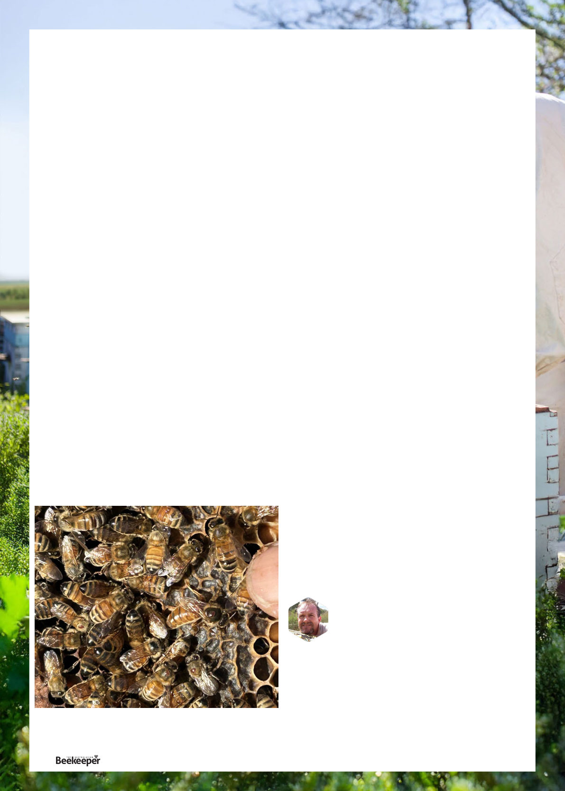

become managed ones by someone else. Cattle and sheep get
bought and sold every day when forage and seasonal condi-
tions dictate, and it should be exactly the same for beehives if
high numbers cannot be adequately supported by their current
owner.
Upskilling
If you know that you need assistance or have done a poor job
managing varroa and acknowledge that you need to do better
than you have then there are many pathways you can take to
improve yourself as a beekeeper.
1 Contact the Varroa Development Officers to get them to visit
and assist you to manage your current varroa situation. -
2 If you also have other pest or disease issues then ask your
VDO if they can bring a BBO along too, as they can offer
ongoing assistance to enable you to clean up your American
foulbrood (AFB) and other issues that are affecting your hive
health.
3 Do varroa training, in person or online via www.varroa.org.
4 Bee Biosecurity (Bee Pest and Disease) training is also avail-
able through Tocal College and BBOs if your state currently
has them.
5 Align yourself with another operator that is managing their
varroa well and learn some tricks from them. A good men-
tor is a valuable resource so you may find it best to do some
work with them to really learn how they operate.
6 Prepare yourself to try, learn and do new things. Just
because you did beekeeping a particular way for a long
time does not mean that is the right way to continue oper-
ating now. Varroa mite changes everything, so you need
to change your beekeeping to respond to that changing
situation.
7 Look at your operation and work out what is generating
income for you and what is a realistic number of hives to
run. A lot of beekeepers fall into the trap of thinking more
hives make more money, but the reality is that is completely
wrong. You need to look at how much income each hive
generates per year, and to be truly successful that should
be a high number.
8 Run fewer but high-quality hives. You may factor in that
every one of your hives are going to do an almond and/or
other pollination job, plus make a lot of honey. The reality
is that if you have many weak, poorly managed low-quality
colonies then they will either get rejected from pollination,
or a smaller percentage of them be paid for. Either way,
inferior quality hives can cost you a lot of money (pollina-
tion that you were not paid for), plus wasted spots on a
truck where better hives could have been. Transporting
non-paying hives (dead wood) to a honey flow or pollina-
tion job means a higher transport cost is allocated to every
real hive in the load, which is just plain poor business.
If every one of the hives on your truck is up to scratch, then
you have minimised the transport cost of each hive to its lowest
possible amount, increasing the profit margin that you gain
from the pollination fee or honey production for each hive.
Profit enables miticides, fuel, truck services and wages to be
paid, that keep the operation running smoothly.
By running 300-400 awesome colonies per qualified bee-
keeper instead of a higher number of weaker colonies (that
perform poorly) then you will have far more time to manage
each hive, reduce swarming (that reduces feral mite bombs),
achieve significantly higher honey yields per colony (because
each hive is higher quality) and outlay lower costs for miticides
too (as you are not wasting dollars treating dead-wood colo-
nies that provide you with nothing in return).
It is now time to re-evaluate your operation and determine
how many less hives you may need to run per beekeeper to
keep in front of varroa, or how many more beekeepers you may
need to put on to manage your current numbers appropriately.
This may also be a great opportunity for you to cull out any
AFB hives that you have been propping up with antibiotics, so
if you would like assistance managing your current internal
AFB problem (with the eventual aim to run a clean operation
without the regular use of antibiotics) then send an email to
bee.biosecurity@dpi.nsw.gov.au or call me on 0438 677 195.
The BBO (Bee Biosecurity Officer) team regularly assists
beekeepers in this regard, as beekeeping without AFB is a far
better way to operate, instead of masking it and allowing it to
continue spreading further within your operation and at the
same time devaluing it at a future time when you may want
to sell. With varroa now taking its own toll on your bees who
needs to also be propping up a heap of diseased hives that will
cause a whole lot more problems if varroa weakens them and
they get robbed out. Time to run your bees at full throttle to
keep ahead of varroa.
Rod Bourke hails from a commercial beekeeping family
with 4000 hives in Tasmania. In addition to working for
many years in the family business, Rod has also been a
prawn, coral, giant clam and seahorse farmer. He has
been a Bee Biosecurity Officer in NSW since 2017
• Finding this means you were 3-6 months late in doing an
alcohol wash. When you find a mite on the queen she is really
struggling, and the hive is almost dead.
38 |
| Vol. 127 | No. 4